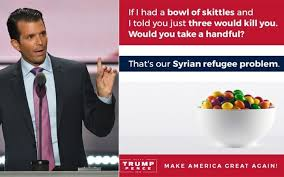
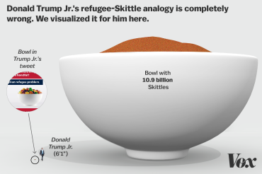

The Case for Syrian Refugees
By Vaibhav Kumar - October 9, 2016
In 2011, the Arab Spring began in the Middle East and with that came the overthrowing of dictatorships around the area. It began in Tunisia with the overthrowing of Zine El Abidine Ben Ali on January 25, 2011 and followed with the dismantling of Hasan Mubarak’s dictatorship in Egypt.
During the time in Syria, the population also tried to protest against the dictator, Bashar Al-Assad. The Assads refused to step down as a result of these protests which lead to a huge civil war in the region. This dilemma did not stay regional but also spread on an international sphere. Soon enough places like the United States, Jordan, Saudi Arabia, and the EU come out to back the rebel group. Furthermore, countries like Jordan and Saudi Arabia continued to send military supplies to the rebel group.
While all of this was happening, nations like Iran and Russia joined the proxy war by supporting Assad. Russia had economic and strategic interests in supporting Assad. Syria was one of Russia’s biggest clients for the military industry, and the location of Syria was crucial as it was the last access point to the Mediterranean Sea for the Russians.
As time went on, the situation worsened with the rise of terrorist organizations like ISIS and the use of chemical weapons by the Syrian government. Amidst all this conflict were the innocent Syrians – citizens that just dreamed for freedom from a dictator government. With these recent events, the salient issue of allowing Syrian refugees into America has become more prominent especially during this election season. 51% of the public believes that the United States should not allow Syrian refugees into our country. That line of logic is so convincing – which rational American would want to increase the risk of home grown terror by allowing refugees shelter in their country?

The Paris attacks set off a round of debates on whether accepting refugees in America would be detrimental to our national security. Donald Trump Jr. recently summarized the issue many Americans were having with this crisis with a simple analogy on this issue that resonated with many constituents. The logic in his argument is very astounding – it states that “If I had a bowl of skittles and I told you just three were poisonous. Would you take a handful? That is our Syrian Refugee Problem.” No levelheaded person would take the risk and eat those skittles knowing three of them are toxic. Likewise, Trump Jr.’s obvious argument is that the government should not take refugees from Syria knowing that there is a high chance that three out of every 50 of them will be terrorists. This line of argumentation would be sane if those numbers were anywhere near reality.
Let’s begin by explaining the process on how these refugees come to America in the first place. First, a refugee must apply to the United Nations of High Commissions of Refugees which collects information such as documents and also has an interview process. Almost 1% of applicants are allowed to get past this stage. Agencies like the United States State Department, the Federal Bureau of Investigation, the Department of Homeland Security, and the Department of Defense continue this screening process by continuing to collect information such as fingerprints that are run through the intensive biometric scanners of these agencies. Also, if you are a Syrian refugee, you get an extra layer called the Syria Enhanced Review. This detailed step by step process usually takes two years to ensure no “terrorist” sneaks into America.
The CATO institute also released a report where they argued that since 2001, almost 860,000 refugees have come to the United States. Out of that only three have been found planning terrorist attacks and none of these plans materialized as they all failed. The article continues and says “To put that in perspective, about 1 in every 22,541 Americans committed murder in 2014.” A more recent CATO study from September 13, 2016 also found that the chance of you dying from a refugee is 1 in 3.64 billion. Let me repeat that: 1 in 3.64 BILLION. America’s murder rate is at 4.5 per 100,000 which is about 163,800 times higher, but we don’t go around banning certain individuals from society. Individuals everywhere live with some risk in their life. That’s the reason we drive cars even though almost 35,200 people died in automobile accidents. Accepting risk in life is part of our daily life, but the rational thing is managing that risk which the United States does with their extreme vetting process.

Going back to Donald Trump Jr.’s analogy we can see why so many questions were raised. To begin, comparing a five year struggle against the government where innocent children have died by chemical weapons to skittles is sick and dehumanizing on all accounts. Let’s ignore the morally bankrupt line of argument Trump Jr. uses for a second. His claims also have no factual basis because to make this analogy correct we would need 10.93 billion skittles or 1.5 Olympic-size swimming pools full of skittles. This also ignored the rigorous screening process this population has to go through. That’s equivalent to eating a skittle after it has been vigorously checked by the FDA and almost 10 other food regulatory agencies for 18 to 24 months. Now instead of just eating skittles, we replace it with saving hundreds of thousands of innocent lives, a majority of people would be ready to take that minuscule of a risk.
It is fair to worry about the safety of your family and country, but we must realize the burdens that puts on other peace-loving innocents that are just stuck with unlucky circumstances. We must understand that the fear we have is not factually grounded but just fear-mongering as we irrationally believe that a threat exists when it really doesn’t. We, as Americans, need to continue to ask ourselves if we want to be known as the country that allowed the continuous slaughtering of Syrians or a country that is ready to resolve an ongoing injustice that the Syrians are forced to suffer on a daily basis.